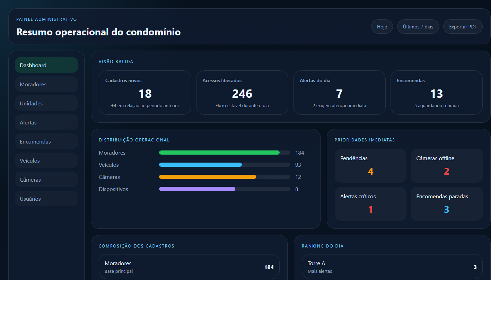
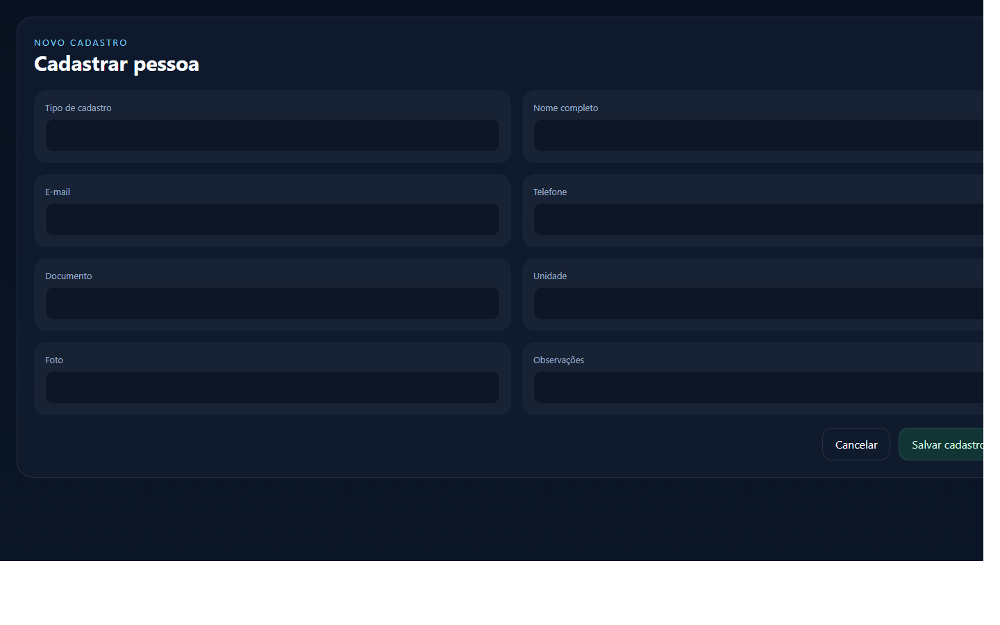
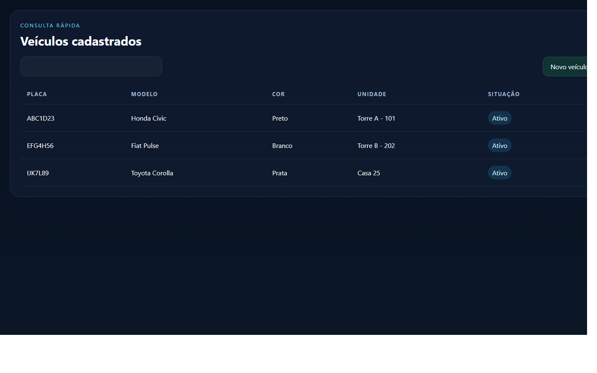

Manual do Usuário Admin
Portaria Web
Versão: 1.0
Data: 23/04/2026
Este manual foi preparado para orientar o uso do perfil Admin do condomínio.
1. Visão geral
O perfil Admin é usado para a gestão diária do condomínio. Ele concentra o acompanhamento do dashboard, dos moradores, das unidades, dos veículos, das encomendas, dos alertas, das câmeras e dos usuários.
Com esse perfil, você consegue:
- acompanhar o painel do condomínio
- consultar e cadastrar pessoas
- consultar e cadastrar unidades
- gerenciar veículos
- acompanhar encomendas
- acompanhar alertas
- consultar câmeras e dispositivos
- administrar usuários do condomínio
Imagem 1
Adicionar captura do dashboard Admin aqui.
Arquivo sugerido:
docs/manual-usuario/imagens/admin-01-dashboard.png

2. Como entrar no sistema
1. Abra o navegador.
2. Acesse o endereço do sistema.
3. Informe e-mail e senha.
4. Clique em Entrar.
Se o acesso estiver correto, o sistema abrirá o painel administrativo do condomínio.
Imagem 2
Adicionar captura da tela de login aqui.
Arquivo sugerido:
docs/manual-usuario/imagens/admin-02-login.png

3. O que cada área faz
Dashboard
Mostra um resumo visual e rápido da situação do condomínio.
Moradores
Permite consultar, cadastrar, editar e importar pessoas.
Tipos mais comuns:
- morador
- visitante
- prestador
- locatário
Unidades
Permite consultar e cadastrar unidades, além de apoiar a vinculação dos moradores.
Usuários
Permite criar e administrar acessos ao sistema.
Alertas
Mostra ocorrências e eventos que exigem atenção.
Encomendas
Permite registrar e acompanhar encomendas até a retirada.
Veículos
Permite cadastrar, editar e excluir veículos vinculados às unidades.
Câmeras
Mostra a situação das câmeras cadastradas.
Dispositivos
Mostra os equipamentos operacionais e de acesso.
4. Passo a passo das tarefas principais
4.1. Consultar o dashboard
1. Entre no sistema.
2. Aguarde o carregamento do painel.
3. Observe os indicadores principais.
4. Clique no card desejado para abrir a área detalhada.
4.2. Cadastrar uma pessoa
1. Abra a área Moradores.
2. Clique em Novo cadastro.
3. Escolha o tipo de cadastro.
4. Preencha os dados principais.
5. Se houver foto, adicione a imagem.
6. Clique em Salvar.
Imagem 3
Adicionar captura da tela de cadastro de pessoas aqui.
Arquivo sugerido:
docs/manual-usuario/imagens/admin-03-cadastro-pessoas.png

4.3. Importar unidades por planilha
1. Abra a área Unidades.
2. Baixe o arquivo modelo.
3. Preencha a planilha com os dados.
4. Faça o envio do arquivo.
5. Revise a confirmação antes de concluir.
4.4. Importar moradores por planilha
1. Abra a área Moradores.
2. Baixe o arquivo modelo.
3. Preencha os dados conforme o padrão.
4. Faça o envio do arquivo.
5. Revise a prévia antes de confirmar.
4.5. Registrar uma encomenda
1. Abra a área Encomendas.
2. Clique em Registrar encomenda.
3. Escolha unidade ou destinatário.
4. Preencha as informações principais.
5. Adicione foto, se necessário.
6. Clique em Salvar.
4.6. Cadastrar um veículo
1. Abra a área Veículos.
2. Clique em Novo veículo.
3. Escolha a unidade correta.
4. Preencha placa e demais dados.
5. Clique em Salvar.
Imagem 4
Adicionar captura da tela de veículos aqui.
Arquivo sugerido:
docs/manual-usuario/imagens/admin-04-veiculos.png

5. Boas práticas
- revise nome, unidade e vínculos antes de salvar
- mantenha fotos atualizadas quando disponíveis
- use a busca antes de cadastrar para evitar duplicidade
- acompanhe alertas e pendências diariamente
6. Dúvidas comuns
O que devo ver no dashboard?
O dashboard é um resumo rápido. Para detalhes, clique no card da área desejada.
Posso importar dados por planilha?
Sim, quando o módulo oferecer modelo e confirmação antes da conclusão.
Quem acompanha a operação diária do condomínio?
O Admin acompanha a rotina de gestão e o perfil operacional acompanha o fluxo direto da portaria.
7. Anexos
- Imagem 1: dashboard Admin
- Imagem 2: login
- Imagem 3: cadastro de pessoas
- Imagem 4: veículos